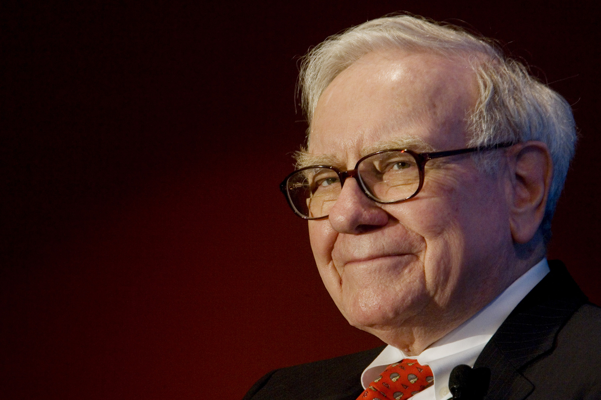

Warren Edward Buffett (born August 30, 1930) is an American business magnate, investor, and philanthropist. He is considered by some to be one of the most successful investors in the world, and as of March 2017 is the second wealthiest person in the United States, and the fourth wealthiest in the world, with a total net worth of $73.3 billion.
Buffett has been the chairman and largest shareholder of Berkshire Hathaway since 1970, and his business exploits have had him referred to as the "Wizard", "Oracle" or "Sage" of Omaha by global media outlets. He is noted for his adherence to value investing and for his personal frugality despite his immense wealth.